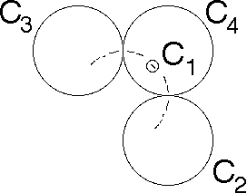
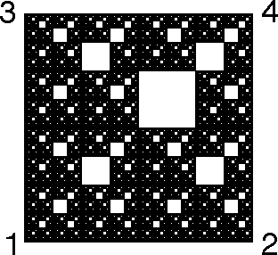
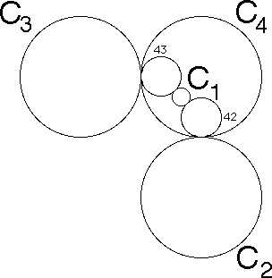

Here is an example: the restricted limit set for inversion in the circls C1, C2, C3, and C4.
|  |  |
To understand the driven IFS, we note some relations between the Ci and inverses of some of the Cj.
|  |
Specifically, C1 is tangent to I4(C3), denoted 43, and to 42.
Consequently, any part of the limit set interior to C4 that inverts from parts interior to C3 or C2 are not interior to C1.
Then the only forbidden combination is that I4 cannot immediately follow I1.
That is,
Return to circle inversion driven IFS.